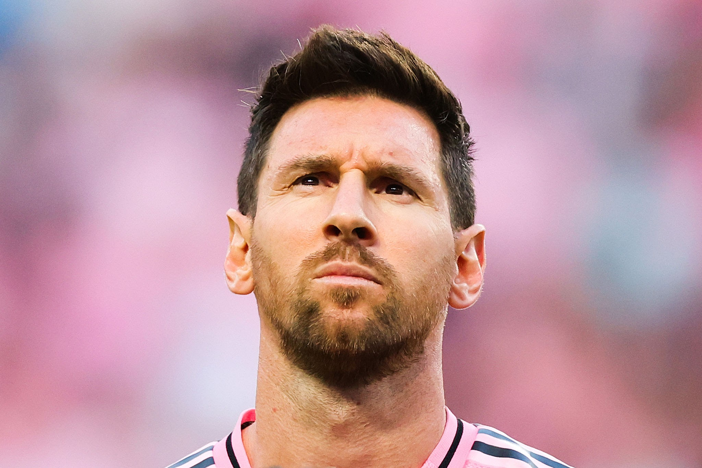
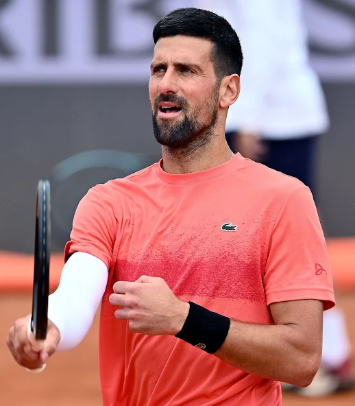

| Player Name | Sport | Photo | Match Link | Biography |
| Virat Kholi | Cricket | |
Watch Match | Virat Kohli (born November 5, 1988, in Delhi) is an Indian international cricketer widely considered one of the greatest batsmen in the history of the sport. He is a former all-format captain of the Indian national team and is renowned for his elite fitness, exceptional run-chasing abilities, and numerous international centuries. |
| Lionel Messi | FootBall |  |
Watch Match | Lionel Andrés Messi (born June 24, 1987) is an Argentine professional footballer who captains both the Argentina national team and Major League Soccer club Inter Miami. Widely regarded as one of the greatest players in football history, he holds a record eight Ballon d'Or awards and has won the FIFA World Cup and multiple Copa América titles. |
| Novak Djokovic | Tennis |  |
Watch Match | Novak Djokovic (born May 22, 1987) is a Serbian professional tennis player, widely regarded as one of the greatest and most accomplished athletes in the history of the sport. He holds the all-time men's record of 24 Grand Slam singles titles and has spent a record-shattering number of weeks ranked as the world No. 1. |
| PV Sindhu | Badmiton | |
Watch Match | Pusarla Venkata (PV) Sindhu (born July 5, 1995, in Hyderabad, India) is an Indian professional badminton player and one of the country’s most decorated athletes. She is best known for being the first Indian woman to win multiple Olympic medals (a silver in 2016 and a bronze in 2020) and a gold at the BWF World Championships. |